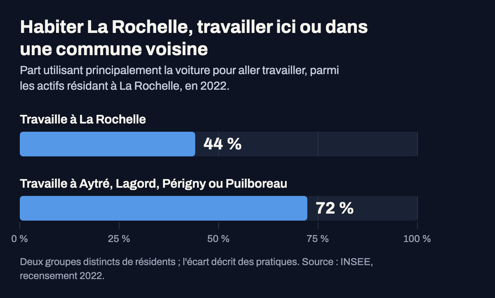
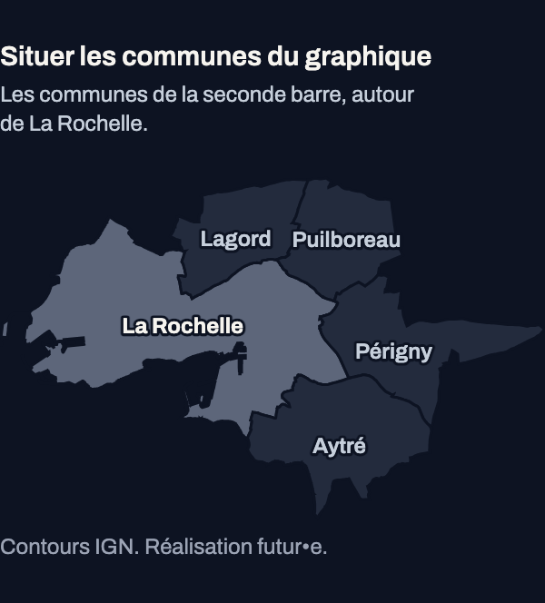

Noms de secteurs de l'INSEE, qui ne sont pas toujours ceux des quartiers. Estimations par sondage : les petits
écarts entre secteurs ne doivent pas être surinterprétés.


Actifs occupés de 15 ans ou plus. Source : INSEE, recensement de la population 2022, fichier détail des
mobilités professionnelles.